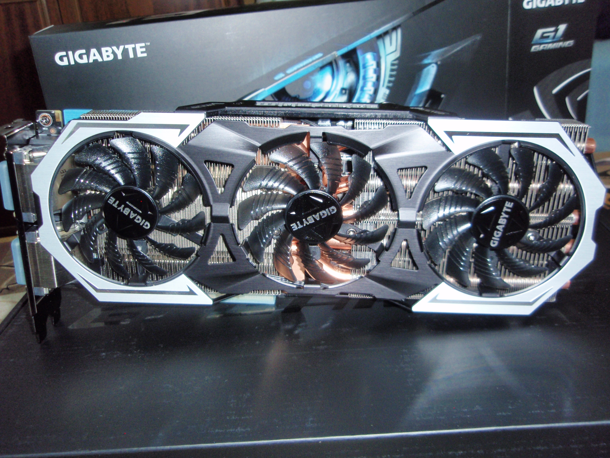

Personal rig update - Gigabyte GTX 980ti G1 Gaming

Gigabyte GTX 980ti G1 Gaming
GPU Core Clock: 1190Mhz
GPU Core Boost Clock: 1342Mhz
GPU VRAM: 6GB GDDR5, 8000Mhz, 384-bit memory interface
About 2 weeks ago I've got this bad boy. I wanted to go high end this time and I really felt the need of more video ram.
With poorly optimized games like GTA 5 when I tried to set all settings to max, I got a warning that it needed more than 4GB VRAM, on 1080p.
Also, I am a big Witcher fan, and Witcher 3 is very demanding if I want to play it on res higher than 1080p. With my GTX 970, while it was
perfectly playable on 1080p, I had to turn some options down if I wanted to play on 1440p. More on Witcher 3 performance later.
I waited quite a while for this GPU, because I wanted exactly this one. The G1 Gaming from Gigabyte is the one that overclocks the most,
it is the GPU with lowest temps and it beats the Titan X in most of the games. Well there is one card that can go higher than the G1 Gaming -
EVGA KINGPIN GTX 980ti, which is a true beast, but not for my needs really. I was very pleased with my 970 G1 Gaming, so I've decided to
go with Gigabyte again.
The other very very important thing is that EK Waterblocks are making waterblock for my GPU! Because I am going full custum water cooling loop.
OK, enough chatting, let's talk numbers.
I didn't have much time to test it on more games, here are some results on The Witcher 3:
My system:
CPU - Intel i7 4790K @4.5Ghz
GPU - Gigabyte GTX 980ti G1 Gaming, 1342 Boost Clock
RAM - 16GB Kingston Hyper X Fury @1866Mhz
I didn't OC my GPU for these tests.
The tests were performed in Novigrad.
4K (3840x2160) - Nvidia DSR, All settings Ultra (including AA), Hairworks ON
FPS: 27-32
Used Video Memory: 3753MB
2560x1440 - Nvidia DSR, All settings Ultra (including AA), Hairworks ON
FPS: 55-70
Used Video Memory: 3180MB
1920x1080 - All settings Ultra (including AA), Hairworks ON
FPS: 70-80
Used Video Memory: 3026MB
Max temperature (celsius): 65
Room temperature (celsius): 30
After that I overclocked my GPU and got the following results:
GPU Clock: 1471Mhz, ~1.87v
GPU Clock: 1510Mhz, ~1.243v
I don't see a difference between 1471 and 1510mhz, so I prefer to use 1471 at stock voltage.
I got 5-6fps improvement in 1080p and 1440p and 7-8fps in 4k. So it seems the bigger the resolution the bigger the fps boost.
Tests were made on Windows 10, Nvidia driver 353.62
Here are some results from the most used and useless benchmarks (they are for people who like to compare numers and ding-dongs :P):
Fire Strike
Unigine Heaven
Unigine Valley